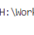

知链助手
登录
加载中...
积分:
0
发现的链接
使用历史
设置
本页面发现的知链链接
刷新
暂未发现知链链接
浏览包含知链链接的网页后将自动收集
使用历史
刷新
暂无使用历史
使用知链链接后将显示在这里
基本设置
自动替换知链链接
将网页中的知链链接替换为一键访问按钮
自动上传发现的链接
将发现的知链链接和密码分享给其他用户
离线模式
直接访问知链链接而不从服务器获取密码（不消耗积分）
网盘类型
百度网盘
阿里云盘
夸克网盘
123盘
保存设置
×
登录
使用GitHub登录
或
用户名
密码
登录
还没有账号？
注册